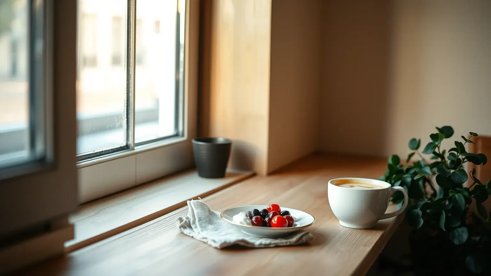
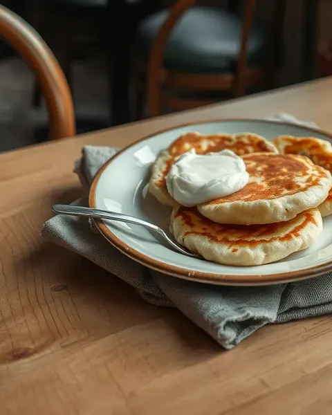
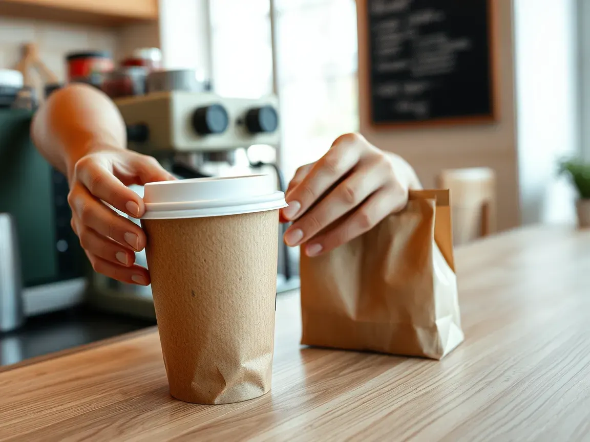
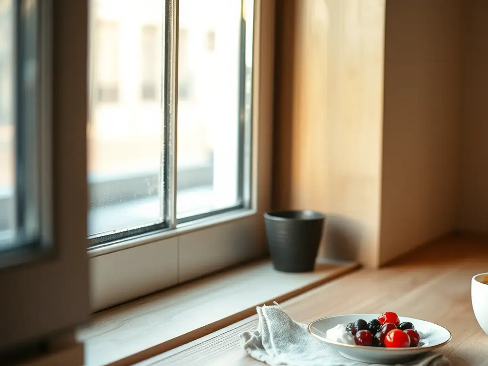

Кофейня «Подоконник» · Красноярск
Кофейня в Красноярске: завтраки весь день
Сырники, омлеты и каши с 7:30 и до закрытия. Кофе с собой можно заказать заранее и забрать без очереди.
Что важно знать до того, как зайти
- 7:30открываемся в будни, в выходные – в 9:00
- весь деньзавтраки: до закрытия, а не до 11
- 230 ₽капучино 0,3 л; цены всего меню – ниже

Кофе с собой
Утром без очереди к кассе
1
Напишите, что взять и когда
Капучино 0,3 и сырники с собой, буду в 8:40
. Ответим, что приняли.
2
Готовим к вашему времени
Кофе варим за пару минут до прихода, а не за полчаса: он не остынет, сырники не подсохнут.
3
Забираете с края стойки
Заказ подписан вашим именем. Оплата картой или переводом, когда забираете.

Зал
Можно с ноутбуком, с коляской и надолго
- Столы у окна с розеткамиСидите сколько нужно: никто не попросит освободить место
- Место для коляски и детский стулУ входа без ступенек, детский стул попросите у стойки
- Музыка тише разговораМожно созвониться по работе или спокойно поговорить
- Столик бронируем сообщениемНапишите время и сколько вас – подтвердим ответом
Заказать
Тем же сообщением можно забронировать столик.